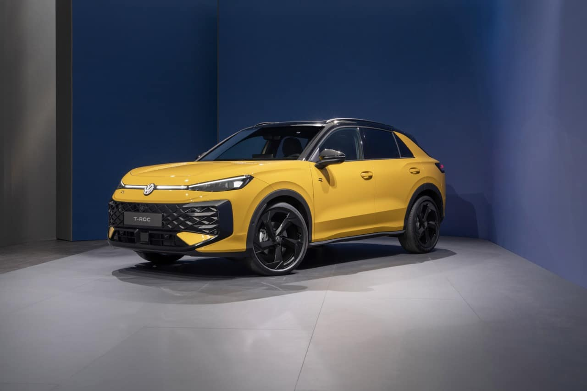

Kontakt podaci
Auto kuća Ćirić
AdresaSlavonski Brod, Đure Pilara 24, Hrvatska
Telefon+385 35 212 500
E-mailmihael.ciric@ak-ciric.hr
Radno vrijemePon - Pet: 08:00 - 16:00
Subota: 08:00 - 12:00
Vozila naših ovlaštenih marki

AdresaSlavonski Brod, Đure Pilara 24, Hrvatska
Telefon+385 35 212 500
E-mailmihael.ciric@ak-ciric.hr
Radno vrijemePon - Pet: 08:00 - 16:00
Subota: 08:00 - 12:00
